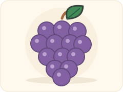

पुस्तक 02 / भाग 01
लिपि और पठन
Script & reading
भाग 01 · PHASE 1
लिपि और पठन
स्वर, मात्राएँ, वर्तनी और शब्दों से स्वतंत्र पठन।
Script & reading 01
01वर्णमाला की पुनरावृत्ति
Script refresher2 पाठ · 1 कार्यपत्रक
पढ़ें → 02
02स्वर और मात्राएँ
Vowels and signs2 पाठ · 1 कार्यपत्रक
पढ़ें → 03
03उ, ऊ और ऋ की मात्रा
U, uu and ri2 पाठ · 1 कार्यपत्रक
पढ़ें → 04
04ए, ऐ, ओ और औ
Four more vowel signs2 पाठ · 1 कार्यपत्रक
पढ़ें →
05अनुस्वार, चंद्रबिंदु और विसर्ग
Nasal and breath marks2 पाठ · 1 कार्यपत्रक
पढ़ें →06बारहखड़ी और अक्षर निर्माण
Barakhadi2 पाठ · 1 कार्यपत्रक
पढ़ें →07संयुक्त और नुक्ते वाले अक्षर
Conjuncts and nukta2 पाठ · 1 कार्यपत्रक
पढ़ें →08शब्द और वर्तनी
Word building and spelling2 पाठ · 1 कार्यपत्रक
पढ़ें → 09
09शब्द से वाक्य
Sentence basics2 पाठ · 1 कार्यपत्रक
पढ़ें → 10
10पठन और प्रथम पुनरावृत्ति
Reading review2 पाठ · 1 कार्यपत्रक
पढ़ें →